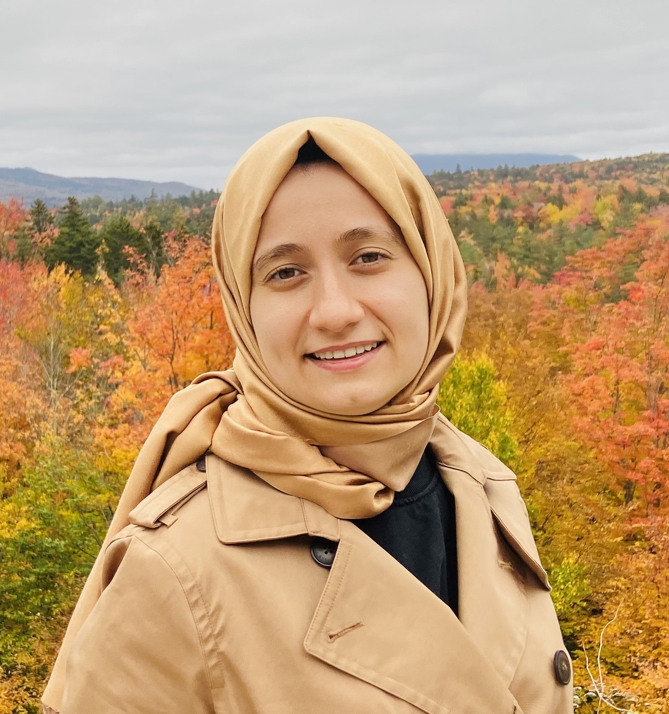

Muslims in ML
NeurIPS 2023 Workshop, New Orleans, USA.
Our workshop in 2023 will feature keynote addresses from four exciting speakers: Madiha Tahir, Lama Ahmad, Hadi Salman, and Afra Feyza Akyürek.
 |
|
| Madiha Tahir Unruly Data: On the Archives and Counter-Archives of Drone Warfare |
Lama Ahmad Red Teaming Generative AI Systems |
|  | |
| Hadi Salman Adversarial Examples Beyond Security |
Afra Feyza Akyürek Editing Language Models with Natural Language Feedback |
Madiha Tahir
Talk title
Unruly Data: On the Archives and Counter-Archives of Drone Warfare
Abstract
This talk asks: what can a standpoint situated amidst the smoldering ruins of drone bombardment in a post-colonial village in a post-colonial country teach us about the racial technics of digital war? US drones began bombing the Pakistan-Afghan borderlands in 2004. Over two decades of the war on terror, the weaponized drone has become the emblem of US techno-imperial power. It inspires terror and awe. Scholarship on the drone war has yielded important insights into the sociotechnical assemblage that constitutes the drone—from image analysts to pilots, to drone cameras, algorithmic kill lists, and data mining. In so doing however, it has tended to orient around US technics and the figure of the US drone pilot. Such work, while sympathetic to the racialized victims of war and colonialism, has nevertheless sometimes treated these subaltern social worlds as un-generative sites for elaborating an analytics of digital war. This presentation draws on ethnographic fieldwork amidst populations from the Pakistan-Afghan borderlands to decenter the drone so that we can better understand the drone war. It asks about the possibilities for generating what I tentatively term unruly data, forms of knowledge that is not reducible to the categories of “militants” or “civilians” often used to debate, discuss, and adjudicate drone bombardment.
Speaker Biography
Madiha Tahir is an Assistant Professor of American Studies and the co-director of the Yale Ethnography Hub. She is an interdisciplinary scholar of technology and war with interest and expertise in digital war, surveillance, militarism, and empire and technology studies from below. Her work intersects the anthropology of war with insights from the fields of postcolonial, South Asian, and Black Studies literatures to reframe our understanding of technology, war, and US imperialism.
Lama Ahmad
Talk title
Red Teaming Generative AI Systems
Abstract
As generative AI systems continue to evolve, it is crucial to rigorously evaluate their robustness, safety, and potential for misuse. In this talk, we will explore the application of red teaming methodologies to assess the vulnerabilities and limitations of these cutting-edge technologies. By simulating adversarial attacks and examining system responses, we aim to uncover latent risks and propose effective countermeasures to ensure the responsible deployment of generative AI systems in new domains and modalities.
Speaker Biography
Lama Ahmad is a Policy Researcher at OpenAI on the Trustworthy AI Team, where she works on conducting analyses to prepare for safe and successful deployment of increasingly advanced AI. At OpenAI, Lama leads external red teaming efforts on models such as GPT-4, DALL-E 3, and other frontier AI systems as well as the Researcher Access Program. Prior to OpenAI, Lama was on the Open Research & Transparency Team at Meta, where she facilitated collaborative research on the impact of Facebook and Instagram on U.S. elections, and helped build products for privacy preserved data sharing for research. Lama was also a Luce Scholar at the UN Global Pulse Lab in Jakarta, Indonesia after graduating from NYU Abu Dhabi, where she studied Social Research and Public Policy and Interactive Media and Technology.
Hadi Salman
Talk Title
Adversarial examples beyond security
Abstract
Adversarial examples are often perceived as threats that deceive AI models, posing security risks. This talk aims to reframe adversarial examples as beneficial tools, emphasizing their positive impact on AI deployment. Specifically, we will discuss their application in two key areas: designing robust objects and safeguarding against unauthorized AI-based image manipulations. Our discussion will offer a nuanced perspective on the role of adversarial examples in AI.
Speaker Biography
Hadi is a Research Scientist at OpenAI. He recently got a PhD in Computer Science from MIT, where he was advised by Aleksander Madry. His work has focused on the development of robust and reliable machine learning systems to ensure their safe and responsible deployment in real-world scenarios. Before MIT, he spent a few years at Microsoft Research also working on robustness aspects in ML.
Afra Feyza Akyürek
Talk Title
Editing Language Models with Natural Language Feedback
Abstract
Even the most sophisticated language models are not immune to inaccuracies, bias or becoming obsolete, highlighting the need for efficient model editing. Model editing involves altering a model’s knowledge or representations to achieve specific outcomes without the need for extensive retraining. Traditional research has focused on editing factual data within a narrow scope—limited to knowledge triplets like ‘subject-object-relation.’ Yet, as language model applications broaden, so does the necessity for diverse editing approaches. In this talk, I will describe our work that introduces a novel dataset where edit requests are natural language sequences, expanding the editing capabilities beyond factual adjustments to encompass a more comprehensive suite of modifications including bias mitigation. This development not only enhances the precision of language models but also increases their adaptability to evolving information and application demands.
Speaker Biography
Feyza is a fifth year PhD student in natural language processing advised by Prof. Derry Wijaya. Her research focuses on editing and improving machine learning models after deployment. Examples to post-hoc editing include increasing number of classes that an object classifier recognizes, improving the outputs of language models through machine generated feedback and model editing with natural language instructions.